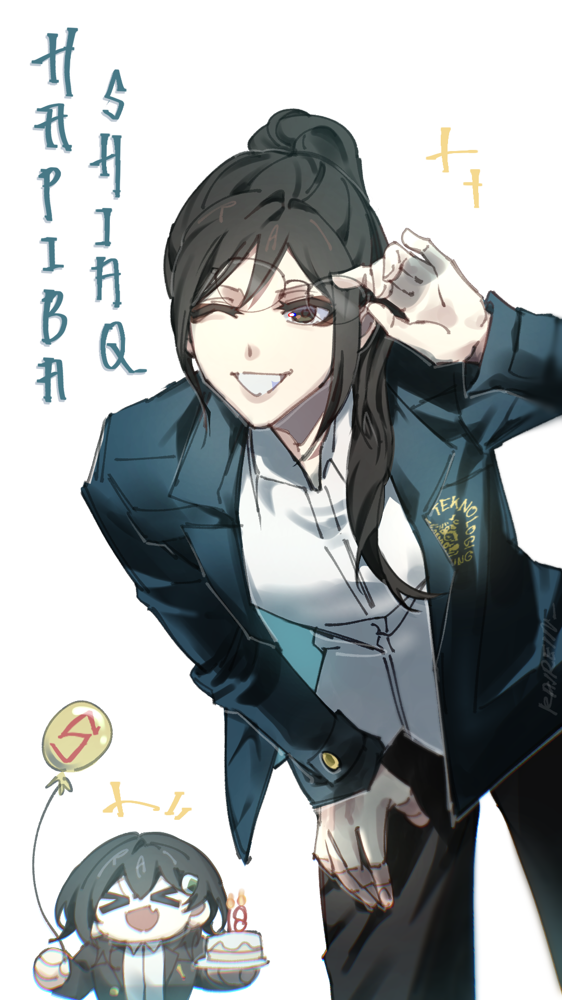

Assalamualaikum
Wi wok de tok not onli tok de tok 🫡🇮🇩
Klik inieh ad yg spesial mwah
🔊 Mute
✖
Your browser does not support HTML5 video.
Tap to start The Bday Party miaw 😺 🎉
Start Now
MIAW miaw nyaw miaw miaw miaw im furry miaw 😺